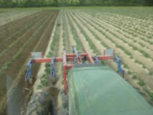
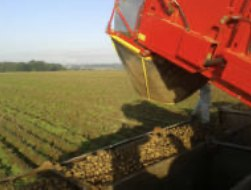

Start/Unsere Arbeit
Anbauen, ernten, verarbeiten, verkaufen.
Der Hof gibt immer weniger Rohware ab und verarbeitet immer mehr selbst. Was auf unseren Flächen wächst, wird am Gederfeldweg zu Mehl, Öl, Senf und Nudeln, oder geht als Kartoffel direkt in den Sack.
01 · Ackerbau
Die Fruchtfolge macht die Arbeit.
Seit 1987 arbeiten wir ohne chemisch-synthetische Düngung und ohne Pflanzenschutzmittel. Stattdessen: eine sechsgliedrige Fruchtfolge mit Rotklee als Gründüngung, mechanische Unkrautregulierung und Gärsubstrat aus der Bio-Biogasanlage, das die Nährstoffe des ersten Kleeschnitts zurückbringt.
- Anbau 2025/2026: Senf, Hafer, Rotklee, Winterweizen, Dinkel, Kartoffeln, Blaumohn.
- Rotklee: erster Schnitt an die Biogasanlage, zweiter Schnitt als Saatgut.
- Wetter: Beim Getreide ist weniger die Trockenheit das Problem als die große Hitze.

02 · Getreide und Mehl
Hundert Prozent Bäckerqualität.
Alle Getreideprodukte werden in Bäckerqualität hergestellt. Rund 98 Prozent des Brotweizens gehen an Bäckereien. Was Sie bei uns kaufen, ist dieselbe Ware.
- Mehle: Weizen Type 550, Roggen Type 1150, Dinkel Type 630, dazu jeweils Vollkorn. In 1, 5 und 25 Kilogramm.
- Flocken: zartblättrige Haferflocken in 500 Gramm, 2,5 und 25 Kilogramm.
- Körner: Roggen, Dinkel, Weizen und Haferkerne in 1, 5 und 25 Kilogramm.
- Nudeln: helle und dunkle Dinkelnudeln aus dem eigenen Dinkel.


03 · Ölmanufaktur
Kalt gepresst, damit drinbleibt, was drin ist.
In der Ölmanufaktur stellen wir Delikatess-Speiseöle aus hundert Prozent hofeigenen Saaten her. Alle Öle werden kaltgepresst, um die wertvollen Inhaltsstoffe zu erhalten. Sebastian Krol verantwortet die Produktion.
Leinöl
Erste Pressung bei unter 40 °C, ungefiltert, damit die sekundären Pflanzenstoffe erhalten bleiben. Innerhalb von sechs bis acht Wochen verbrauchen oder einfrieren, dann hält es etwa ein halbes Jahr.
Mohnöl
Aus der hofeigenen Sorte Wintermohn. Durch die native Kaltpressung bleibt der typische Mohngeschmack erhalten.
Rapsöl und Senföl
Natives Rapsöl in der 500-Milliliter-Flasche, Senföl aus derselben Saat wie der Senf.

04 · Senfmanufaktur
Auf Granitsteinen vermahlen.
In unserer Senfmanufaktur stellen wir exklusiven Bio-Speisesenf aus hundert Prozent hofeigener Saat her, traditionell auf Granitsteinen vermahlen.
- Der scharfe Bernie: scharf, benannt nach dem Gründer der Kornkammer.
- Kochkompl!ze: mittelscharf, der geschmackvolle Partner in der Küche.
- Schärfemeister: scharf.

05 · Kartoffeln
Holter Knolle und Ruhrtalgold.
Unsere Kartoffeln sind als Holter Knolle und als Ruhrtalgold erhältlich, sortiert nach Sorte und Kochtyp. Nicht alle Sorten sind gleichzeitig verfügbar.
- Festkochend behält beim Kochen die Form, Stärkegehalt etwa 14 Prozent. Sorten: Nicola, Glorietta, Belana, Allians, Musica.
- Vorwiegend festkochend: Agria, Laura (rotschalig), Marabell.
- Mehlig zerfällt schnell, Stärkegehalt etwa 16,5 Prozent. Sorten: Karelia, Margit, Gunda.
- Weitere Sorten je nach Saison, zuletzt Taormina.

06 · Verkauf
Vom Hof direkt zu Ihnen. Oder über den Bäcker.
Vier Wege, auf denen unsere Produkte den Hof verlassen.
Hofverkauf
Jeden Freitag von 8 bis 17 Uhr am Gederfeldweg 37 in Witten. Fällt ein Feiertag auf den Freitag, am Donnerstag. Telefonische Absprachen sind möglich.
Bäckereien
Rund 98 Prozent des Brotweizens gehen als Mehl an Bäckereien.
Handel
Unter der Marke Ruhrtalgold im Naturkosthandel, bei EDEKA Zierles in Oer-Erkenschwick und über die Abokiste 24.
Online
Über diese Seite per Bestellanfrage aus dem Korb oder direkt im Onlineshop, dort versandkostenfrei ab 50 Euro.
100 % Transparenz
Rückverfolgbar bis auf den Acker.
Zu jeder Saison veröffentlichen wir, auf welchen Flächen unsere Produkte gewachsen sind.
- 2025/26
Kartoffeln wachsen auf diesen Äckern: Dortmund-Barop, Am Windrad Airwin, und Dortmund-Mengede, Naturschutzgebiet Im Siesack.
- 2023/24
Roggen, Weizen, Dinkel und Hafer stammen von Flächen in Essen, Witten und Dortmund.
Die Flächen der Getreidesaison 2025/2026 tragen wir nach, sobald die Liste vorliegt.